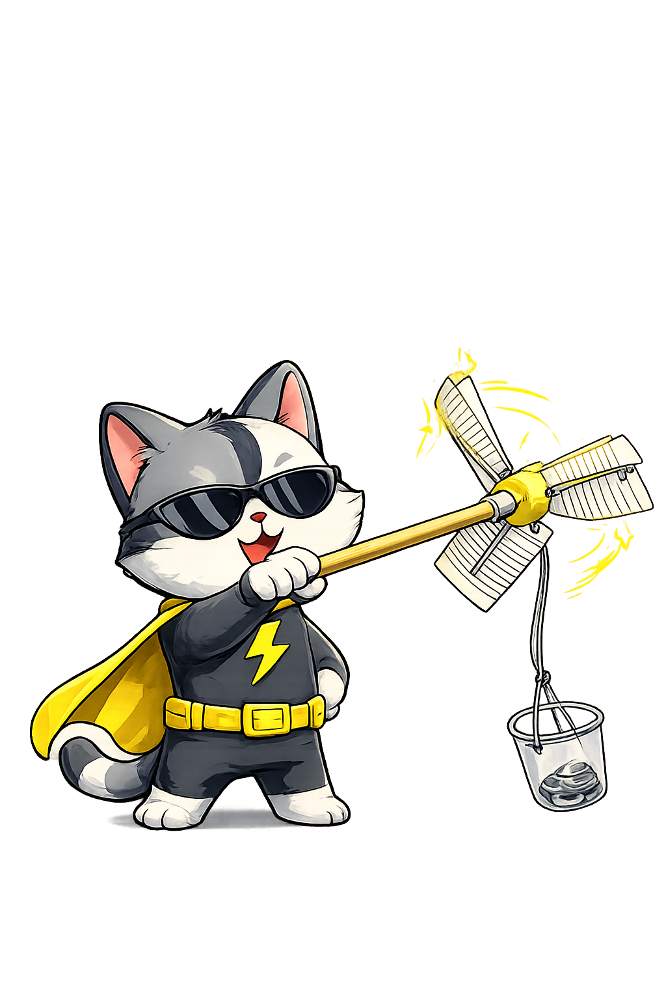

01
Choose your wind-catching parts
Pick blade material, a hub, and a driveshaft. Keep the design light so the wind can spin it easily.
Image placeholder
Use simple classroom materials to build a windmill that catches moving air and lifts a small weight.

Before You Start
Build It
Pick blade material, a hub, and a driveshaft. Keep the design light so the wind can spin it easily.
Attach your blades to the hub. Try to space them evenly so the windmill spins smoothly instead of wobbling.
Connect the hub to a skewer, straw, tube, or dowel. Make sure it can turn freely when air pushes the blades.
Tie string to the shaft or spool, then attach the cup and washer. As the windmill turns, the string should wind up and lift the weight.
Place the windmill in front of a box fan or steady wind source. Watch whether it spins, lifts, or needs adjustment.
Change the blade size, number, angle, or material, then test again. Compare each trial to see which design lifts the weight best.